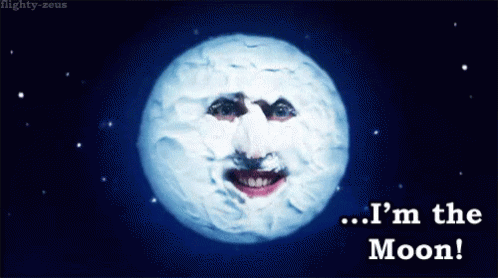

THE UNIVERSE?
Also try:
rock the universe 2020, he-man masters of the universe
Universe - Wikipedia
www.history.com/shows/the-universe
From the planets to the stars and out to the edge of the unknown, history and science collide
in THE UNIVERSE. With ground-breaking new discoveries and even more stunning high-definition computer ...
The Universe - Image Results
10 Wonders Of The Universe - YouTube
How Large is the Universe? - YouTube
25 Strange Things About The Universe - YouTube
More The Universe images
The Universe (TV Series 2007– ) - IMDb
www.imdb.com/title/tt1051155
The universe began with a massive expansion, billions and billions of years ago, and it continues to expand with every passing second. The idea that the universe, and man's very
existence, began with...
universe | Definition & Facts | Britannica
www.britannica.com/science/universe
Universe, the whole cosmic system of matter and energy of which Earth, and therefore the human race, is a part.Humanity has traveled a long road since societies imagined Earth, the Sun, and
the Moon as the main objects of creation, with the rest of the universe being formed almost as
The universe was born with the Big Bang as an un
